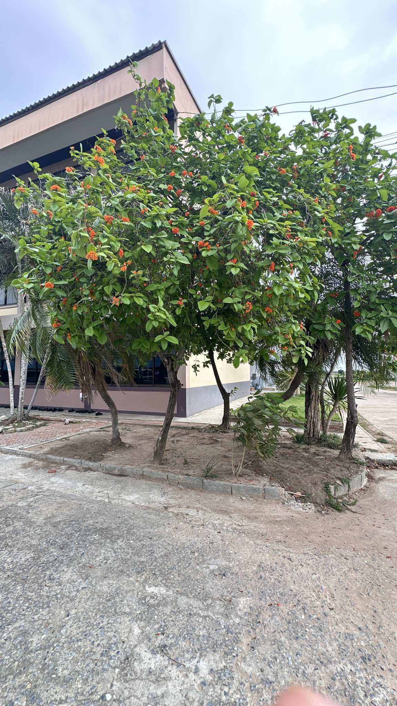

สาวสันทราย
ต้นสาวสันทราย นอกจากจะมีดอกสวยงามและส่งกลิ่นหอมแล้ว ยังมีประโยชน์ทางสมุนไพรอีกด้วยค่ะ โดยส่วนต่าง ๆ ของต้นสาวสันทรายสามารถนำมาใช้ประโยชน์ได้ดังนี้
ประโยชน์ทางด้านสมุนไพร
ราก: ใช้เป็นยาขับลม ช่วยบรรเทาอาการท้องอืด ท้องเฟ้อ
เปลือก: ใช้แก้บิด แก้ท้องร่วง ช่วยลดอาการปวดท้อง
ดอก: ใช้แก้ไข้ระบาย ช่วยลดไข้และช่วยให้ระบบขับถ่ายทำงานได้ดีขึ้น
ต้นบุญนาค
ต้นบุญนาค นอกจากจะมีดอกสวยงามและส่งกลิ่นหอมแล้ว ยังมีสรรพคุณทางยาที่น่าสนใจอีกมากมาย โดยส่วนต่างๆ ของต้นบุญนาคสามารถนำมาใช้ประโยชน์ได้
สรรพคุณของส่วนต่างๆ
ดอก:
กลิ่นหอม: ใช้ทำน้ำหอม แต่งกลิ่นสบู่ หรือใช้ในการอบเครื่องหอม
ยาหอม: ดอกแห้งใช้เป็นส่วนประกอบในยาหอม ช่วยบำรุงหัวใจ แก้ร้อนใน กระสับกระส่าย
ขับเสมหะ: ช่วยขับเสมหะ บำรุงโลหิต
ผล: มีสรรพคุณในการขับเหงื่อ
ใบ: ใช้รักษาบาดแผลสด แก้พิษงู
แก่น: แก้เลือดออกตามไรฟัน
ราก: ขับลมในลำไส้
เปลือก: ฟอกน้ำเหลือง กระจายหนอง
กระพี้: แก้เสมหะในคอ
ปาล์มหางจิ้งจอก
ต้นปาล์มหางจิ้งจอก นอกจากจะมีรูปลักษณ์ที่สวยงามและโดดเด่นแล้ว ยังมีประโยชน์อื่นๆ อีกมากมาย โดยเฉพาะในด้านการประดับตกแต่ง เนื่องจากมีลักษณะเด่นคือใบที่แผ่ออกคล้ายหางจิ้งจอก ทำให้เป็นที่นิยมนำไปปลูกประดับสวน หรือใช้เป็นไม้กระถาง
ประโยชน์ของปาล์มหางจิ้งจอก
ไม้ประดับ: เป็นที่นิยมปลูกเป็นไม้ประดับ เนื่องจากมีรูปทรงสวยงาม ใบเขียวชอุ่ม และสามารถเติบโตได้ในหลายสภาพแวดล้อม
เพิ่มความสวยงามให้สวน: ด้วยรูปทรงที่โดดเด่น ทำให้สวนดูมีชีวิตชีวาและน่าสนใจยิ่งขึ้น
บังแดด: สามารถใช้ปลูกเป็นรั้วหรือฉากบังสายตา เพื่อให้ร่มเงาและความเป็นส่วนตัว
ปรับปรุงคุณภาพอากาศ: ช่วยดูดซับก๊าซคาร์บอนไดออกไซด์และปล่อยออกซิเจน ทำให้คุณภาพอากาศดีขึ้น
ลดมลภาวะทางเสียง: ช่วยลดเสียงรบกวนจากภายนอกได้ในระดับหนึ่ง
พุด
ต้นพุดศุภโชคนั้นมีประโยชน์หลากหลายเลยค่ะ ทั้งในด้านความเชื่อทางวัฒนธรรม และประโยชน์ทางสมุนไพร รวมถึงความสวยงามที่ใช้ประดับตกแต่งได้ด้วย
ประโยชน์ทางสมุนไพร:
เปลือกต้น: ใช้แก้บิด
ใบ: นำมาตำพอกเพื่อลดอาการบวม
ดอก: มีกลิ่นหอม ช่วยให้รู้สึกผ่อนคลาย และอาจมีสรรพคุณทางยาอื่นๆ อีก
ประโยชน์ด้านความสวยงาม
ไม้ประดับ: ดอกพุดมีสีขาวสวยงาม กลิ่นหอมชื่นใจ จึงนิยมปลูกเป็นไม้ประดับ
น้ำมันหอมระเหย: ดอกพุดสามารถสกัดเป็นน้ำมันหอมระเหย ใช้ทำน้ำหอม หรือแต่งกลิ่นเครื่องสำอาง
หมากเหลือง
ต้นหมากเหลือง นอกจากจะเป็นไม้ประดับที่มีใบสีเหลืองทองอร่ามสวยงามแล้ว ยังมีประโยชน์อื่นๆ อีกมากมาย
ประโยชน์ของต้นหมากเหลือง
ไม้มงคล: เชื่อกันว่าเป็นไม้มงคลที่นำความเจริญรุ่งเรืองมาสู่บ้านเรือน
ไม้ประดับ: ใช้ตกแต่งสวน หรือปลูกในกระถางเพื่อประดับภายในบ้าน
ฟอกอากาศ: ช่วยดูดซับสารพิษในอากาศ ทำให้อากาศบริสุทธิ์
บังแดด: ให้ร่มเงาและความร่มรื่น
ลดมลภาวะทางเสียง: ช่วยลดเสียงรบกวนจากภายนอก

สาละลังกา
ต้นสาละลังกา นอกจากจะมีดอกที่สวยงามและส่งกลิ่นหอมแล้ว ยังมีประโยชน์อีกมากมาย ดังนี้
ประโยชน์ทางด้านสมุนไพร
ยาง: สามารถนำยางของต้นสาละลังกามาใช้เป็นยาสมานแผล และรักษาโรคผิวหนังได้
ผล: ผลของสาละลังกามีสรรพคุณช่วยแก้ท้องเสียและท้องร่วง
ประโยชน์ทางด้านอื่นๆ
ไม้ประดับ: ด้วยดอกที่สวยงามและกลิ่นหอม ทำให้ต้นสาละลังกาเป็นที่นิยมนำมาปลูกเป็นไม้ประดับในสวน หรือตามสถานที่สาธารณะ
ความเชื่อ: ในบางวัฒนธรรมเชื่อว่าต้นสาละลังกามีความศักดิ์สิทธิ์ และเป็นสัญลักษณ์ของความเจริญรุ่งเรือง
อินทนิลน้ำ
ต้นอินทนิลน้ำ เป็นไม้ยืนต้นขนาดใหญ่ที่มีดอกสวยงาม และมีประโยชน์หลากหลาย ทั้งในด้านการประดับสวน และสรรพคุณทางยา
ประโยชน์ทางยา
ช่วยควบคุมระดับน้ำตาลในเลือด: มีงานวิจัยหลายชิ้นสนับสนุนว่าใบของต้นอินทนิลน้ำมีสารที่ช่วยลดระดับน้ำตาลในเลือด ทำให้เป็นสมุนไพรที่น่าสนใจสำหรับผู้ป่วยเบาหวาน
ลดความดันโลหิต: สารสกัดจากใบอินทนิลน้ำยังมีฤทธิ์ช่วยลดความดันโลหิตสูงได้อีกด้วย
ช่วยระบบย่อยอาหาร: ช่วยบรรเทาอาการท้องอืด ท้องเฟ้อ และช่วยในการขับถ่าย
ลดไข้: ช่วยลดไข้ได้
แก้บาดแผล: ใบของต้นอินทนิลน้ำสามารถนำมาตำพอกแผล เพื่อช่วยสมานแผลได้
โมกซ้อน
ต้นโมกซ้อน นอกจากจะมีดอกที่สวยงามและส่งกลิ่นหอมแล้ว ยังมีประโยชน์ทางสมุนไพรอีกด้วยค่ะ โดยส่วนต่าง ๆ ของต้นโมกซ้อนสามารถนำมาใช้ประโยชน์ได้ดังนี้
ประโยชน์ของต้นโมกซ้อน
ราก: ใช้รักษาโรคเรื้อน
ยาง: ใช้แก้โรคบิดที่มีอาการเลือดออก ใช้แก้พิษงูและแมลงกัดต่อย
เป็นไม้ดอกไม้หอม: ดอกของโมกซ้อนมีกลิ่นหอมเย็น ช่วยให้รู้สึกผ่อนคลาย
เป็นไม้ประดับ: มีรูปทรงสวยงาม ใบเขียว ดอกขาว ช่วยเพิ่มความสวยงามให้สวน
มีความเชื่อ: มีความเชื่อว่า "โมก" จะทำให้เกิดความสุข บริสุทธิ์ สดใส และคุ้มกันภัยกับชาวราศีพฤษภ
ชวนชม
ต้นชวนชมนั้นมีประโยชน์หลากหลายเลยค่ะ โดยเฉพาะในแง่การนำมาประดับตกแต่ง เนื่องจากมีลักษณะเด่นหลายอย่าง
ประโยชน์ของต้นชวนชม
ไม้ประดับ: ต้นชวนชมเป็นที่นิยมปลูกเป็นไม้ประดับ เพราะมีดอกสวยงามหลากสีสัน ดอกบานทน และออกดอกได้ตลอดปี ทำให้สวนหรือมุมพักผ่อนดูสดใส
ความหลากหลายของพันธุ์: มีพันธุ์ชวนชมให้เลือกปลูกมากมายหลากหลายสีสันและรูปทรง ทำให้สามารถเลือกพันธุ์ที่ถูกใจและเข้ากับสไตล์การตกแต่งได้
ทนแล้ง: ชวนชมเป็นพืชที่ทนแล้งได้ดี เหมาะสำหรับผู้ที่ไม่มีเวลาดูแลมากนัก หรือปลูกในพื้นที่ที่มีแสงแดดจัด
ขยายพันธุ์ง่าย: สามารถขยายพันธุ์ได้หลายวิธี ทั้งการปักชำ การตอนกิ่ง และการเพาะเมล็ด ทำให้สามารถเพิ่มจำนวนต้นได้ง่าย
ความเชื่อ: ในบางวัฒนธรรมเชื่อว่าต้นชวนชมเป็นต้นไม้มงคล นำโชคลาภมาให้ และช่วยป้องกันสิ่งไม่ดี